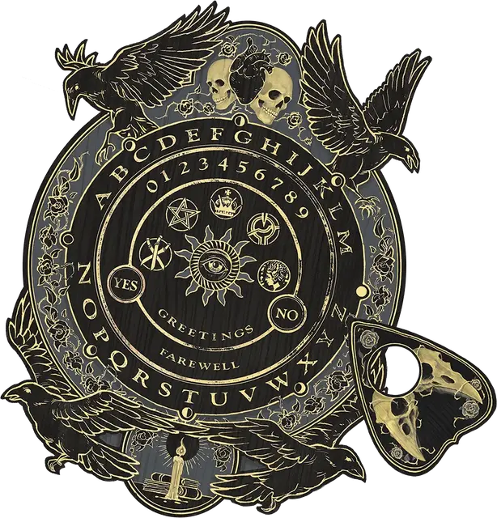

Доска спиритизма
Spirit Board
Чудесный предмет, очень редкий

Рекомендованная стоимость 40 000 ЗМ
На одну из сторон этой изукрашенной деревянной доски нанесены буквы алфавита Общего языка, а также слова «Да» и «Нет» и символы, обозначающие «Благо» и «Горе». В комплекте с доской идёт деревянная планшетка в форме сердца. Планшетка должна лежать на стороне с буквами, чтобы магия доски работала.
Доска имеет 3 заряда и восстанавливает 1 потраченный заряд на каждом рассвете. Касаясь планшетки, вы можете потратить 1 минуту на сотворение одного из заклинаний, указанных в таблице ниже. В таблице указано также, сколько зарядов необходимо потратить для сотворения заклинания. Сотворяя заклинание, вы призываете духов умерших, чтобы они направляли планшетку по поверхности доски и отвечали на ваши вопросы, указывая на буквы или слова на доске.
| Заклинание | Затрачиваемые заряды |
| Гадание | 1 |
| Общение | 3 |